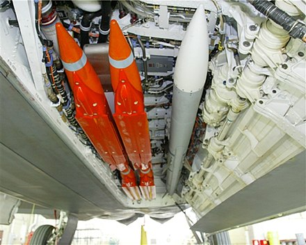

Capabilities
Both aircraft are made for stealth. One is a proof of concept, and the other is a tactical fighter with great speed and range in mind.

| yf-118g | The bird of prey is more of a proof of concept. It was never meant to be made in mass numbers. This was when the F-117 Nighthawk was in service. This aircraft was more focused on the shelf components to make it cost effiective. |
| yf-23 | The YF-23 was designed to meet USAF requirements for survivability, supercruise, stealth, and ease of maintenance. Supercruise requirements called for prolonged supersonic flight without the use of afterburners. The supercruise speed is recorded at Mach 1.72, the maximum is at Mach 2.2. The combat range of this aircraft is around 651 to 695 nautical miles. |